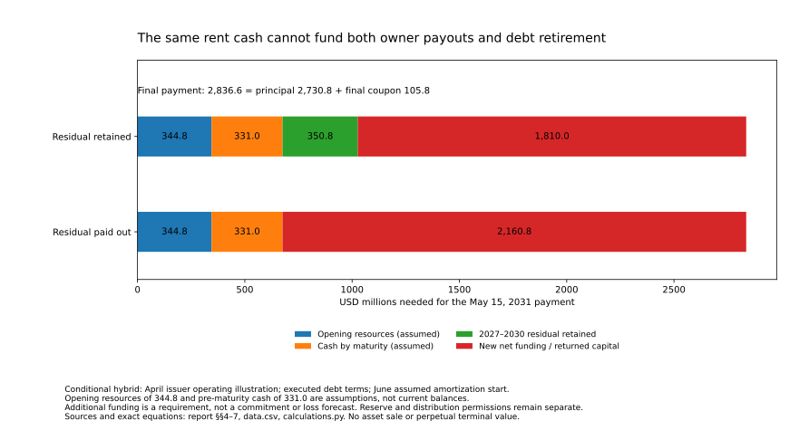

Is AI a Bubble? · Dated investigation
Can the cash claims all hold together?
A cash-generating chain can still need another financing.
Scope: the U.S.-centered commercial generative/frontier-AI build-out since 2023. A bounded connected case, not an economy-wide cash total or a personal investment recommendation.
A cash-generating chain can still need another financing
The evidence supports a real commercial expansion with selective financial resilience. It does not support a cash plan in which owners distribute the surplus and count the same money again toward debt retirement. A useful service can generate positive cash after scheduled payments, yet still need refinancing when the remaining principal falls due. That is a financing requirement to explain—not proof that the service is fictitious, an estimate of expected loss, or a forecast of default.
The documented chain here connects CoreWeave’s purchase of hosting, Core Scientific’s six facilities across five sites, the financing subsidiaries and noteholders, and permitted distributions to the parent. CoreWeave and Core Scientific are different companies. Their operating relationship is established; a complete allocation of CoreWeave’s own customer receipts to these particular facilities is not. No Microsoft, Meta or OpenAI workload is assigned to a campus simply because those companies appear elsewhere in the research. 1 2 4
The central result combines three explicitly different records. An April 21 operating illustration supplies prospective project cash. May financing terms supply the executed 7.75% coupon and May 15, 2031 maturity. The June filing’s assumption supplies a November 2029 first amortization payment. Under that combination, 2027–2030 produces $350.808 million after modeled debt service, before additional omitted uses or distribution restrictions. The remaining principal and final coupon require $2.837 billion in May 2031. Positive annual residual cash is therefore not the same thing as complete debt retirement. 1 2 3 4
A feasible favorable path exists. Under the stated resource and timing assumptions, retaining the residual leaves about $1.810 billion of replacement funding required. A four-year, fully amortizing refinancing at an assumed 10% rate and 2% fee can supply that amount if subsequent annual cash after all non-debt uses is $600 million. Distributing the earlier residual raises the funding requirement to about $2.161 billion. These are alternative allocations of the same operating outcome, not a change in customer demand.
The adverse case is not “no one uses AI.” It is that cash arrives too late, costs or credits absorb more of it, distributions remove resources, or future financing cannot be supported by the cash remaining after the service’s full needs. At $450 million of annual cash and a 12% refinancing rate, the tested four-year structure falls short. Other funding, a different permitted structure or changed uses would then be needed; no actual loss or insolvency follows from the scenario alone.
This strengthens the whole answer in two directions. Genuine payment, provider cash, useful older capacity and realized investor gains make a blanket fictitious-demand story weak. But the same evidence cannot justify every ownership price or permit every participant to claim the same future cash. The demanding test is joint compatibility: enough cash, at the right legal entity, by the relevant date, after all costs and prior claims. The investigation does not estimate an economy-wide funding hole or a systemic-crisis probability.
1. Follow one connected chain—not an invented industry total
The principal operating perimeter is the six-facility portfolio supporting Core Scientific Finance I LLC’s notes. The broader CoreWeave and Core Scientific accounts give funding context, not a pooled bank account for that borrower. The host’s revenue is also a cost to its customer; the subsidiary’s debt is already inside its reporting parent. Adding both sides of those relationships as independent outside resources would overstate what is available. 1 2 4 5
Economic explanation · no probabilities
One hosting payment, several claims
Scroll horizontally on a narrow screen to inspect the full figure.
Three questions organize the test. First, what resources actually entered and left the companies? The historical cash statements answer that within their reporting boundaries. Second, what can the identified service retain after costs and tenant credits? The prospective illustration provides a conditional starting point, not actual project collections. Third, where may that retained cash go before the notes mature? Financing terms, reserves, owner distributions and payment dates decide that question.
The payer’s own customer economics remain a separate requirement. CoreWeave may earn revenue from many contracts and obtain debt or equity funding. Those resources have other uses, including equipment, staff, power, leases and debt. Its consolidated operating cash is already net of operating payments; it is not gross customer receipts waiting to pay the same hosting bill again. The available disclosures do not assign a complete future net budget to this portfolio.
The scope is deliberately bounded. It does not identify the ultimate funding of every AI customer, value every intermediary, or turn two companies into the entire AI economy. The purpose of using a demonstrably connected chain is to test whether the individual cash claims can coexist without inventing the missing allocations. A successful local financing case would be meaningful, but would not establish that every investment elsewhere is sound.
2. Actual cash: operating activity and external financing both matter
The two reported cash accounts reconcile
Both columns below cover January–June 2026, in USD millions. Beginning and ending cash include restricted cash. The sum is a bounded arithmetic comparison, not an audited combined entity, an AI-only account or a measure of independent final demand. 4 5
| Reported cash-flow boundary | CoreWeave | Core Scientific | Arithmetic sum |
|---|---|---|---|
| Beginning cash, including restrictions | 4,130.000 | 311.378 | 4,441.378 |
| Operating cash flow | 3,663.000 | 230.949 | 3,893.949 |
| Investing cash flow | −14,874.000 | −1,182.891 | −16,056.891 |
| Financing cash flow | 13,985.000 | 3,191.955 | 17,176.955 |
| Ending cash, including restrictions | 6,904.000 | 2,551.391 | 9,455.391 |
| Separately reported unrestricted cash | 5,524.000 | 1,769.735 | 7,293.735 |
Operating and investing flows together were −$12.163 billion; net financing supplied $17.177 billion. The resulting $5.014 billion increase in cash therefore cannot be attributed solely to customer-generated surplus. The ending sum contains $2.162 billion of restricted cash. Those restrictions matter to the ability to apply a resource to a particular payment; they do not make the cash fictitious.
This is evidence of financing during a large expansion—not evidence that every operating project loses money. Construction precedes some receipts. Refinancing also creates a repayment and a new receipt, so treating all principal paid as a permanently recurring operating expense would distort the business. Conversely, ignoring financing because operating cash is positive would miss the sources that actually sustained the reported uses.
CoreWeave’s financing bridge is $16.747 billion of debt proceeds net of costs, plus $2.982 billion of equity proceeds, less $5.219 billion of repayments, $492 million of capped-call purchases and $33 million of other uses. It reconciles to the reported $13.985 billion net inflow. Core Scientific’s bridge is $4.275 billion of gross debt proceeds, less $1 billion of bridge repayment, $48.143 million of debt costs and $35.310 million of award-tax cash, plus $0.158 million of other financing. It reconciles to $3.192 billion. These are financing flows with associated claims—not sales. 4 5
The specified cash-capital comparison totals $15.304 billion: CoreWeave’s $14.117 billion, plus Core Scientific’s $954.244 million of property/equipment purchases and $232.5 million of land. It is not the complete economic investment in AI or the cost of the single financing portfolio. Noncash additions, unpaid bills, customer-contributed assets and other categories have their own accounting treatment.
The character of operating cash matters
The June colocation accounts also show real operating activity: Core Scientific reported $214.208 million of first-half colocation revenue and $90.304 million of service costs. Those are company-period accrual amounts, not the precise financing portfolio’s cash. Both include $56.132 million of matching power reimbursement/cost, while service cost includes $6.696 million of depreciation. Removing power and depreciation leaves $27.476 million of other service expense, not a complete cash-cost measure. Positive gross contribution is favorable evidence; it does not allocate corporate costs, taxes, working capital or investment, and it does not turn the much larger prospective portfolio illustration into an observed result. 4
Core Scientific’s operating cash includes $208.249 million of proceeds from sales of digital assets. The $230.949 million total therefore cannot be read as cash margin on AI hosting. CoreWeave’s operating cash includes working-capital and advance-payment effects, not simply the difference between collected service fees and a steady-state expense bill. 4 5
The host’s colocation deferred-revenue reconciliation shows why an advance cannot be spent twice:
The noncash adjustment is not another receipt. Nor does recognizing service against earlier funding cause the earlier cash to arrive again. This can be a productive construction-funding arrangement: the customer supplies resources before delivery, and receives the agreed credit or service later. The financing benefit is real, but so is the future obligation. 4
The reciprocal transfer disappears when tracing net resources across both parties, even when the companies classify the two sides differently. That is an economic reconciliation principle, not a claim to have reconstructed every intercompany invoice or every classification difference. CoreWeave’s deferred-revenue cash adjustment and revenue recognized from opening balances do not independently reveal gross collections from the final customers behind these sites.
June is the observation date, not an October cash position. The later CoreWeave notes closing is separately established, but inserting its proceeds into June cash while ignoring all intervening spending, repayments and receipts would not produce a current balance. The same restriction applies to Core Scientific’s June reserve when it is used as the scale of a future resource assumption below.
3. What the host sells—and who pays for the capital
A specific portfolio, with source-defined capacity
The April supplement identifies Austin, Denton, two Dalton facilities, Marble and Muskogee. Its detailed capacity rows sum to 588.5 MW, against the rounded 590-MW headline. These are IT-capacity descriptions, not observed October paid occupancy or measured useful processing. 1
| Facility in the April portfolio | Detailed IT MW |
|---|---|
| Austin | 16.5 |
| Denton | 262.0 |
| Dalton 1 | 30.0 |
| Dalton 4 | 145.0 |
| Marble | 65.0 |
| Muskogee | 70.0 |
| Detailed sum | 588.5 |
The listed base fees are $100 per kW per month outside Austin and $115 at Austin. Applied to those capacities, they give $709.170 million of annual base-fee scale, before contractual progression, credits and other adjustments. That is not the full illustrated revenue, current collections or a rental price for the GPUs inside the facilities. Power can appear as both reimbursed revenue and a matching expense; it is not all retained hosting value. 1
The April construction estimate is approximately $5.5 billion, with roughly $4.4 billion already contributed, leaving a dated estimated $1.1 billion. It is not an October cost-to-complete ledger. The contractual capital allocation is not uniformly “customer pays everything”: the supplement identifies a $104.4 million licensor contribution for Denton. Reported capital, remaining spending and rights to an asset must stay attached to the party actually responsible.
Customer-funded construction is not free capital plus untouched rent
For the applicable non-Austin portfolio, qualifying advances can be credited against up to half the monthly base fees until repaid, with the stated $1.5 million per MW limit. The detailed 572 non-Austin MW imply $858 million, versus the supplement’s rounded $859 million. The small difference is retained as a rounding boundary, not presented as a hidden deficit or corrected source error. 1
That mechanism shifts cash earlier. It does not let the host receive the advance and then collect the same credited fees again. In addition, the treatment of other contributed assets matters: CoreWeave retains ownership during the term and bears specified repair, maintenance and replacement responsibilities, with the contractual transfer at the end. A hosting-only return does not include an independently financed, costless compute fleet.
The documents also describe end-of-term credits, including $217,163 per MW for Denton/Dalton and $228,413 per MW for Muskogee/Marble, applied under the specified final-month arrangements, with unused amounts remitted as provided. These are contractual end-of-term adjustments, not current liquid resources. They cannot be added as a present asset while omitting their corresponding obligations. 1
The non-Austin terms are twelve years with two five-year tenant extension options. An option is not an exercised renewal. Austin’s stated customer term is seven years without those options. Long remaining commercial rights can support refinancing, but a model must respect which cash survives which date. Extending the Austin line through a later repayment window without replacing the expired contract would overstate the available cash.
A location and its cash rights are not freely transferable by assumption
Austin remains subject to an underlying lease and the relevant consent conditions. Denton’s ground-lease, power and improvements arrangements also matter. These are not identical freehold assets with perpetual operating rights. Utility agreements, renewal terms, delivery obligations and service performance can affect whether the modeled revenue is available. 1
A lawful credit following delivery or service failure differs from a financially distressed tenant failing to pay a valid invoice. A cheaper external service likewise does not establish a unilateral right to reduce an existing agreed payment. The current contract terms—not a generic spot-price decline—control that change.
The favorable economic mechanism is still substantial: a customer funds useful capacity, the host supplies a long-lived service, and lenders obtain rights over defined contracts and assets. The qualification is that the host’s expense and capital perimeter is not the complete cost of delivering the compute to CoreWeave’s own customers. The payer must separately fund equipment, its own service costs and other obligations. Neither side can use the other’s unallocated earnings as a complete cash plan.
4. April’s illustration, May’s notes and June’s assumption
The source documents answer different questions
Evidence dates and result types
Three records—not one current forecast
Scroll horizontally on a narrow screen to inspect the full figure.
April 21: an issuer illustration. The supplement lays out prospective revenue, operating expenses, other cash-flow items, debt payments and residual cash. Its other-cash-flow row combines repayments of tenant advances with maintenance or other items outside operating expenses. Its assumed coupon was 8.25% before final pricing. The illustration explicitly omits reserve movements and specified construction-period interest. It also leaves $2.285 billion of debt outstanding at the end of 2031. Those are disclosed qualifications, not a newly discovered concealment or a promise that the illustrated residual retires all debt. 1
The original April table below remains an issuer illustration in USD millions, including its then-assumed financing. It is shown separately so its positive residual and remaining debt are not mistaken for the executed-note calculation that follows. Rows were rounded independently; the supplied net-operating-income and residual figures are retained rather than recomputed into purported unrounded actuals. 1
| April illustration | Revenue | Operating expense | Net operating income | Other cash-flow items | Interest | Amortization | Levered free cash flow | Ending debt |
|---|---|---|---|---|---|---|---|---|
| 2026 | 737 | 418 | 319 | 165 | 147 | 0 | 6 | 3,300 |
| 2027 | 1,346 | 761 | 585 | 301 | 261 | 0 | 23 | 3,300 |
| 2028 | 1,396 | 779 | 616 | 237 | 261 | 0 | 119 | 3,300 |
| 2029 | 1,420 | 782 | 638 | 33 | 255 | 254 | 97 | 3,046 |
| 2030 | 1,447 | 787 | 660 | 7 | 225 | 381 | 47 | 2,665 |
| 2031 | 1,448 | 775 | 672 | 10 | 194 | 381 | 87 | 2,285 |
The issuer’s “levered free cash flow” label applies to this particular illustration and its exclusions. It does not establish legal availability for distributions or full debt retirement. The entire 2031 column is annual, not cash earned before a May maturity.
May 6: executed financing. Core Scientific Finance I LLC issued $3.3 billion of 7.75% secured notes, at 99.25% of face, with final maturity on May 15, 2031. The notes have defined subsidiary guarantees and collateral. The parent’s completion undertaking is not an unrestricted guarantee of every ordinary note payment. 2 3
June 30: a disclosed scheduling assumption. The filing’s amortization schedule assumes the first payment begins in November 2029. Actual commencement depends on contractual triggers involving final rent commencement and the abatement of tenant credits. An assumed date in a financial note is not evidence that the trigger has already occurred, or a guarantee that every future installation and credit schedule will match it. 3 4
The joint test keeps those distinctions visible. It takes the April operating path, substitutes the executed financing terms and applies the June first-installment assumption. It is a research calculation combining specified sources—not a revised issuer forecast, an October cash certificate or a complete underwriting. A later financing term does not automatically refresh an earlier operating projection.
The executed debt calendar changes the final-payment test
The annual amortization rate is 11.5% of original face, with semiannual installments of 5.75%, not 11.5% twice a year. On the June November-2029 assumption, $189.750 million is paid in 2029 and $379.500 million in 2030. The first November 2026 coupon has its own initial accrual period; it is not silently made identical to every later half-year payment. 3 4
The important maturity arithmetic is:
Final principal $2,730.750m + final coupon $105.8165625m = $2,836.5665625m due May 15, 2031.
Thus 82.75% of original principal remains at the modeled final date. The result follows the executed payment rules under the June commencement assumption; it is not an estimate of current default risk. A later amortization start does not itself extend final maturity.
Positive annual residual cash is a different result
The following combines April’s operating illustration with those debt terms. All figures are USD millions. No reserve release, new borrowing or asset sale is added. Additional costs and legal distribution restrictions remain outside the residual. 1 3 4
| Calendar year | Illustrated cash before debt service | Calculated coupon cash | Calculated principal paid | Residual before additional uses |
|---|---|---|---|---|
| 2027 | 284.000 | 255.750 | 0.000 | 28.250 |
| 2028 | 379.000 | 255.750 | 0.000 | 123.250 |
| 2029 | 605.000 | 255.750 | 189.750 | 159.500 |
| 2030 | 653.000 | 233.692 | 379.500 | 39.808 |
| Total | 1,921.000 | 1,000.942 | 569.250 | 350.808 |
Each annual residual is positive under the stipulations. That is meaningful evidence of a compatible operating-and-scheduled-payment path. It does not make the final principal disappear. Nor does it establish that the entire residual could legally leave the borrower: collection accounts, operating needs, reserves and distribution conditions still apply.
The lower final coupon improves the comparison relative to an otherwise unchanged 8.25% rate. But a simple annual interest saving cannot repair all differences between April’s illustration and the final financing. The actual schedule, different amortization timing, initial accrual and omitted costs must be reconciled, not reduced to one rate comparison.
The test starts its multi-year residual in 2027 rather than inventing a complete allocation of 2026 cash around the construction and financing dates. Reported June resources are not automatically the eligible opening resources of that forward window. A reserve can be an asset and still be unavailable for dividends or early principal retirement; funding it is a cash allocation, not a second underlying operating expense.
5. Reconcile what the tenant pays with what the provider retains
A combined source row leaves an allocation range—not a revenue hole
The April table combines tenant-advance repayment with other cash uses. The report does not invent the split. Let A be the portion returned to the tenant as credits, and X the remaining other costs. Their sum is the disclosed combined row. Tenant cash paid is revenue less A; provider cash before debt is that payment less operating costs and X. 1
For 2027, the identity in millions is:
where 0 ≤ A ≤ 301.
The left side is the tenant transfer after the unknown credit allocation. The right side is operating and other non-tenant costs, debt service and retained residual. Because the credit reduces both the tenant’s payment and the host’s corresponding combined use, the provider’s modeled residual is unchanged by merely identifying that split.
| Year | Tenant cash after credits: lower to upper, USDm | Provider cash before debt, USDm |
|---|---|---|
| 2027 | 1,045–1,346 | 284 |
| 2028 | 1,159–1,396 | 379 |
| 2029 | 1,387–1,420 | 605 |
| 2030 | 1,440–1,447 | 653 |
These ranges express an unresolved allocation of a disclosed row, not probability bands, negotiated concessions or discretion to select the most affordable tenant bill. Two years of the issuer’s rounded rows also differ by $1 million from simple subtraction; the supplied net-operating-income row and its rounding boundary are preserved rather than silently “repaired.”
The ranges exclude direct construction contributions, GPUs and their replacement, and the tenant’s other costs. The lower end is not a comprehensive minimum budget for CoreWeave. Its future cash allocated to these facilities must cover both the net hosting transfer and whatever additional project costs it bears.
The missing payer allocation is a real limit on the joint conclusion
A useful constraint is tenant resources after other uses, plus usable additional funding, must cover the net hosting payment plus separately borne capital and service uses. The report has not measured all of those terms. A disclosed lease total for one perimeter cannot be automatically added to the project illustration, and a lifetime uncommenced-lease total cannot be assigned evenly to these years.
The payer-funding investigation established substantial resources at Microsoft and Meta, but did not allocate their cash to these particular Core Scientific sites. The customer-persistence investigation established real commercial capture in selected application and advertising settings, but not this tenant’s complete future margin. Those favorable results help assess mechanisms; they cannot fill a missing payment allocation by assumption. 12 13
Conditional transfer · USD millions
A payment reduction moves cash; it does not create it
Scroll horizontally on a narrow screen to inspect the full figure.
Consider a separate $50 million payment concession in 2027, solely as a sensitivity. Assume it is agreed or earned under applicable terms and that no other real cost falls. CoreWeave retains $50 million more and the host receives $50 million less; the modeled host residual moves from +$28.25 million to −$21.75 million. The two-company chain does not create or destroy $100 million of operating resources merely because both sides record the change.
This is not a forecast of a concession or a right to reprice at will. It shows how pressure can move between parties while aggregate useful activity continues. A genuine cost saving would be different: it could improve the joint resources rather than simply reallocate the payment. A missed invoice is different again, introducing timing, remedies and possible recovery costs.
6. Maturity funding and owner payouts draw on the same resources
State the missing quantities before filling them with scenarios
The 2031 operating illustration covers a full year. The notes mature on May 15. All twelve months of annual cash cannot be silently put into the bank before that date. Let B be eligible resources at January 1, 2027, z net cash arriving in 2031 before maturity, D distributions leaving the borrower, and X extra uses omitted from the preceding residual. Assume no return on retained cash. 1 3 4
Required additional source F = max(0, 2,485.758125 + D + X − B − z).
F is an additional net source required by the stated uses. It could be refinancing, new equity, net asset proceeds, returned parent capital or another usable resource. The equation does not identify an approved facility or the probability that funds will be obtained. A required source is not a measured loss: it says which assumptions cannot all stand without another resource or a change in uses.
With no distributions or extra uses, avoiding additional funding requires B + z of at least $2.486 billion. The report does not establish those resources. Nor does an unestablished amount imply that it cannot exist. The calculation identifies what would need to be shown for a fully self-retiring plan within this window.
Retaining the residual versus distributing it
The principal scenario uses B = $344.8 million, the scale of the June debt-service reserve, as an assumed future eligible opening resource. It is not a finding that the reserve will remain intact and available in January 2027. It uses z = $331 million, half the April illustration’s $662 million full-year 2031 pre-debt cash, as an explicit timing assumption, not an observed receipt schedule or a claim that half arrives by May. Extra omitted uses are set to zero as a convention, not measured as absent.
Supplied calculation · conditional sources for a final payment
Cash retained and cash distributed cannot fill the same bill
Scroll horizontally to inspect all component labels. Values are USD millions.

| Same operating path; alternative cash allocation | Residual retained, USDm | Total modeled resources by maturity, USDm | Additional net source required, USDm |
|---|---|---|---|
| Keep the entire 2027–2030 residual | 350.808 | 1,026.608 | 1,809.958 |
| Distribute that entire residual | 0.000 | 675.800 | 2,160.767 |
The difference is exactly the $350.808 million paid out. Operating performance has not worsened; the cash is simply no longer available to retire the old debt. A permitted distribution can be valuable to the parent while increasing the resources the borrower must later obtain. Permission to distribute is itself separate from this algebra.
Crediting the entire illustrated $662 million of 2031 pre-debt cash before May—an intentionally more generous timing choice—would still leave $1.479 billion required at the assumed opening balance. That is not a verified upper bound on all available resources: actual opening cash, other funding, costs and collection dates can differ. It is a check against claiming that the full-year operating number alone settles maturity.
Each additional dollar of distributions or omitted costs increases the signed funding requirement by one dollar. Each additional eligible dollar available by maturity reduces it by one dollar, before financing costs. This is the allocation trade-off, not an estimate of a company’s dividend policy or an assertion that cash elsewhere in the group can be moved without conditions.
Deferring amortization can preserve liquidity without eliminating debt
If the first installment moves from November 2029 to November 2030 while final maturity stays fixed, the modeled final principal rises by $379.5 million, to $3.110 billion. It would be wrong to call that entire increase a new loss or the net new funding burden.
When the deferred installments remain with the borrower, the 2027–2030 retained residual also rises, from $350.808 million to $708.250 million. Under the same B and z assumptions, additional funding rises from $1.810 billion to $1.847 billion: about $36.764 million, the extra interest across the compared path. The saved principal is still a resource, unless paid out or used elsewhere.
This is a meaningful favorable liquidity mechanism. Delaying amortization can help a developing service through its early cash period. It is neither free financing nor automatic extension of the legal maturity. Actual trigger dates, reserve needs, distributions and any additional costs decide how much of the saved cash remains available. 3 4
7. A finite refinancing can work—but it has a cash requirement
Test a serious favorable path, not a costless funding plug
The retained-cash scenario needs $1,809.958 million net. Assume a new refinancing charges a 2% fee, has an annual rate of 10%, and is repaid through four equal annual debt-service payments, with the subsequent service cash available for those payments. There is no assumed asset sale or perpetual terminal value. These terms are scenarios—not a lender quote or commitment.
Gross new principal must be $1,846.896 million to leave the required net proceeds after the $36.938 million fee. The annual payment is $582.642 million. If the service generates $600 million a year after all non-debt uses, the refinancing is supported by that finite stream, leaving about $17.358 million annually beyond modeled debt service.
Conditional finite repayment · USD millions
Refinancing needs its own complete cash case
Scroll horizontally on a narrow screen to inspect the full figure.
At those terms, the maximum supported net funding is $1,863.881 million, about $53.923 million above the required amount. That margin also illustrates the owner-payout constraint: it could accommodate that much additional earlier extraction in this narrow economic comparison, not the entire $350.808 million residual. It is not a legal distribution allowance or verified current borrowing capacity.
The favorable result is substantial because it finances real future claims rather than assuming borrowing is free. New principal brings cash and a liability, the fee consumes resources, interest is paid, and the loan amortizes fully over a finite period. A refinancing need therefore does not automatically make the underlying economic proposition impossible or the old noteholders destined to lose.
“After all non-debt uses” is the demanding assumption
The $600 million must remain after operating expenses, tenant credits, taxes, relevant corporate support, maintenance and replacement or transition expenditure within the chosen perimeter. The repayment window must also respect expiring customer rights, including Austin’s shorter term. The figure does not extend every April revenue line unaltered into the future or assume that new equipment, a replacement tenant or lease renewal costs nothing.
A new lender would have its own collateral, coverage, reserve and contractual requirements. Those terms have not been obtained. Thus the calculation establishes economic cash compatibility under specified assumptions, not that an executable refinancing has been underwritten. It also does not determine the tenant’s own return on its equipment, the original full-cost project return, or the value of the parent’s shares.
The adverse case reveals the change that would be needed
At $450 million annual cash after non-debt uses, a 12% rate, the same four-year term and 2% fee, the cash supports only $1,339.471 million of net new funding. That is about $470.487 million below the retained-cash scenario’s requirement. Funding the whole requirement on those terms would demand approximately $608.062 million annually—more than the assumed $450 million.
This is a mismatch among the chosen cash, amount, rate and duration. It is not expected creditor loss, a probability range or an insolvency finding. Retained or contributed equity, different net costs, additional eligible resources, or a different financing structure could change the result. A longer tenor can help only when the later service cash and rights needed to support it are established; the term cannot be lengthened indefinitely while omitting renewal and replacement.
The lesson is not that every project must repay without refinancing. It is that refinancing must be supported by a cash stream that has not already been allocated to someone else. Owner distributions, a debt-retirement reserve and the collateral value offered to a new lender cannot each receive the same remaining cash in full.
8. Closing proceeds, parent cash and actual holders are different claims
A completed issue is real funding, not earned surplus
The May notes’ 99.25% issue price on $3.3 billion face implies $3.27525 billion before fees. The issuer estimated approximately $3.240 billion net proceeds; that estimate is not a complete final usable-cash certificate. Proceeds fund specified reserves and a distribution to the parent, including repayment of the bridge facility. Financing made available to the parent is not thereby customer-generated profit or a public-shareholder dividend. 2
The issue has a defined borrower and five project guarantors covering the six facilities. The project obligations and collateral cannot be replaced by the label “Core Scientific debt” when assessing who pays. The parent’s completion guarantee and the issuer/subsidiary note obligations have different scope. Neither unrestricted access to all group cash nor an unlimited parent repayment guarantee is assumed. 2 3
Core Scientific’s June $1.770 billion unrestricted cash is a resource of the reported parent perimeter, with competing uses. Its separate convertible principal includes approximately $460 million due in September 2029 and $625 million due in June 2031, with their own settlement and other terms. The notes studied here mature a month before the latter date. The comparison does not establish that all convertibles will demand face in cash; it does prevent assigning the parent’s whole balance to one subsidiary while forgetting other claims. 4
The later CoreWeave closing does not finance this borrower by identity
CoreWeave’s separately verified September 22 issue was $4.2 billion face, including the option, with approximately $4.137 billion after purchaser discounts and $566.2 million of capped-call cost. That leaves $3.5708 billion before other expenses. Its annual 2.875% coupon implies $120.75 million on the issued face. This was completed follow-on financing—not an IPO, operating revenue or an October unspent-cash balance. 6
The receipt is genuine favorable evidence of financing access. It does not automatically transfer cash to Core Scientific Finance I LLC, retire the May notes or establish that future financing will have the same terms. The original financing investigation’s earlier unsettled record remains correct for its September 20 cutoff; the later closing evidence controls the current status without rewriting the dated chapter.
Do not assign a lender to an instrument it was not shown to hold
The holder investigation identified GECC’s June CoreWeave-related loans, bond and private-fund interest. Its $2 million face / $1.973 million fair-value CoreWeave bond due July 2032 is a different instrument from the Core Scientific Finance I notes examined here. The $23.311 million selected GECC perimeter therefore cannot be used as the holder register for this portfolio or as a forecast of losses from this maturity test. 14
The holder findings remain important: cash gains have actually been realized, capital can absorb some losses, and a holder’s own collateral or funding conditions can tighten before its equity disappears. But each transmission step needs its real contractual link. Neither a company-logo diagram nor two issuers’ similar names supplies that link. The current beneficial holdings of all the Core Scientific notes are not established in this investigation.
No unclosed frontier-company offering is credited as funding in the test. A primary issue, a secondary exit and a contractual subscription are different transactions. Funding can preserve a useful business while changing who receives the eventual upside; successful placement alone cannot validate the return on the underlying assets.
9. What the connected test changes about the whole answer
The favorable evidence is stronger than a blanket bubble story allows
The cumulative evidence is not confined to users saying that they like a tool. The customer investigations document useful work, repeated buying and, in selected cases, supplier capture. The payer investigation identifies substantial operating resources and genuine financing. The older-capacity investigation finds selective re-contracting and reuse. The holder investigation adds cash actually realized by an investor. Each supports a different part of a sustainable expansion. 7 8 12 13 14 15
This chapter adds a connected financing test that can succeed without pretending that the initial loan retires itself. A paying tenant, functioning facilities, controlled costs, retained early cash and a finite later refinancing can jointly support creditor repayment. A need for further capital is not in itself evidence that the commerce is fake. Nor must every investor avoid loss for a productive industry to continue.
The financial expectations remain conditional on allocation and timing
The strongest concern is now more specific than “there is not enough revenue.” The same expected cash can be claimed as a parent distribution, a debt-retirement resource and support for new financing. Those claims are jointly inconsistent when they exceed the cash actually available on the relevant date. A long contract, high project margin or successful issue does not resolve that allocation on its own.
The adverse path can involve continuing useful service while owners earn less, funders impose restrictions, or new capital takes a larger share of the eventual return. Payment relief for one party can shift pressure to another. A delayed amortization installment can help present liquidity yet raise later interest. These are mechanisms for differentiated outcomes, not a prediction that all projects must fail together.
The earlier Meta-backed DDTL 4.0 full-amortization case remains a substantive favorable contrast. Its specific underwriting expected repayment from contracted cash without refinancing or re-leasing. The Core Scientific instrument has different terms and a different modeled maturity balance. One does not refute or inherit the other. Projected coverage remains distinct from observed compliance in both. 9
The earlier IREN full-budget recovery thresholds and whole-company ownership requirements also remain conditional results of their own models. The new refinancing test does not become an appraisal of their continuation value, a replacement margin for a frontier lab, or a fresh fair price for any share. Creditor payment, original capital recovery and return at the price paid for ownership remain different tests. 10 11
The evidence-weighted answer favors real commercial substance and selective containment over fictitious-demand or inevitable-crisis accounts, while identifying concrete dependence on retained cash, productive continuation and further capital. Confidence is higher in the historical cash identities and documented financing terms than in complete future payer allocations, eligible reserves, full cash costs or refinancing terms. A wider credit-crisis conclusion would require evidence about concentrations and funding across multiple actual holders, not the grossing-up of one project requirement.
10. Continuity, decisive evidence and limits
What stays established—and what stays unresolved
The NVIDIA–Energy Global prepaid-forward treatment is unchanged: the $1.5 billion obligation is established; receipt remains unverified in the inspected evidence; nonpayment is not inferred. Neither a January CoreWeave share purchase nor a separate financing closing verifies that different receipt. No forward receipt enters this model. 8 14
Earlier evidence retains its own dates and scope. Company-wide retention is not AI-product renewal; recognized revenue is not collected cash; an accrual-profit bridge is not a cash waterfall. Freshworks’ constant-currency comparison, compensation explanation and reconciled working-capital sign remain intact. Meta’s experiment is provider-reported, not a complete model-specific cash return. The older-design contract is not a serial-number age record, and Austin’s historical expense-derived budget is not a current collateral appraisal. 13 15
The new advance is a matched sequence of cash, credits, financing and distributions—not a calendar update on those older findings. It makes a previously general concern numerically inspectable while leaving the information that would settle it explicit.
| Evidence that would change the conclusion | What it would establish | What would not substitute for it |
|---|---|---|
| Actual tenant credits, other project costs and net collections | Where the tenant-payment allocation sits, and how much service cash remains | Another gross revenue or backlog headline |
| Completed construction costs and the payer’s separately borne equipment/service uses | Whether both sides can support the same operating path after their own full costs | The hosting-only margin as a complete compute return |
| Actual commencement/credit-abatement triggers and installment dates | The debt calendar and resources retained before maturity | An assumed amortization date treated as an accomplished event |
| Reserve balances, eligible releases and permitted distributions | Which cash is available to this borrower on the relevant dates | The group’s total unrestricted cash or one earlier reserve balance |
| Net receipts before May 15, 2031 | The portion of annual service cash that can meet maturity | The whole 2031 annual illustration placed before May |
| Executed refinancing terms and sustainable cash over their full term | Whether required net funds can be obtained and repaid after fees and all non-debt uses | A generic assumption that any profitable service can borrow any amount |
| Actual holder positions and their own funding terms | Whether a shortfall would be absorbed or transmit further | Assigning GECC’s different CoreWeave bond to these notes |
Methods, downloads and the measurement ceiling
The new test is documentary and deliberately bounded. It uses reported company cash accounts, a supplied issuer project illustration, executed note terms and a separately disclosed amortization assumption. The arithmetic is in USD millions, with units and evidence status retained in the downloadable ledger. The forward resource, timing, refinancing-rate, fee and cash assumptions are not observed outcomes or probability estimates.
Download the 198-record input ledger, the calculation companion, and the owner-payout figure. The companion runs offline with Python 3.10 or later; the calculations use the standard library, and optional figure generation requires matplotlib. The April 8.25% coupon is classified here as an issuer illustration, consistently with the report, rather than as the executed coupon. Numerical inputs and equations are retained.

The most consequential gaps are future payer cash allocated to this portfolio; the complete split of credits and project costs; construction timing; reserve and distribution eligibility; actual receipts before maturity; and future financing terms. The hybrid cannot certify covenant compliance, a legally executable distribution plan, a complete current cash position or a full original project return. Nor does it show that the resources outside its perimeter are zero.
The investigation inspected the supplement’s HTML table and extracted PDF text, but its PDF screenshot retrieval failed. A successful visual audit of that external PDF is not claimed. Source notes distinguish inspected documents, inherited records, estimates and assumptions; inaccessible routes do not establish that a payment or transaction did not occur. No private invoice, current borrower certificate, engineering site audit or representative holder census supplies the missing variables.
The favorable case consequently remains conditional but real in mechanism. The adverse case remains informative without being a loss forecast. The next useful observation is not a larger financing announcement: it is a reconciled account of who can retain which cash, after which costs, before which claim falls due.
Sources and evidence boundaries
The investigation’s retrieval-day boundary is 3 October 2026. Reporting, contract, illustration and event dates below remain separate. These notes distinguish issuer statements, executed contracts, inherited dated evidence and conditional calculations. References to earlier investigations preserve their original measurements and qualifications.
1. Core Scientific, April 21, 2026 supplemental information. Portfolio, licensing terms and prospective financial table, including its footnotes. An issuer illustration, not reported project cash. The assumed 8.25% rate precedes the executed coupon; reserve movements and specified construction interest are excluded. The supplied research read the HTML table and extracted PDF text, but PDF screenshot retrieval failed; no successful visual PDF audit is claimed.
2. Core Scientific, current report covering the May 6, 2026 note closing. Items 1.01–1.02: issued face, price, estimated net proceeds, reserve funding, parent distribution and bridge repayment. The filing includes an earlier event date; it does not move the May closing to that earlier date. Estimated net proceeds are not a complete current usable-cash certificate.
3. Core Scientific Finance I LLC, May 6, 2026 indenture. Note form; first-installment and reserve definitions; payment, collateral, restricted-payment and guarantee provisions, including Article 14. Annual amortization is 11.5% of original face, paid in semiannual 5.75% installments after the applicable trigger. The parent completion undertaking does not become an unlimited ordinary-repayment guarantee. The public document is not an obtained current compliance certificate.
4. Core Scientific, Form 10-Q for June 30, 2026. Consolidated cash/restricted-cash reconciliation, revenue and deferred-revenue notes, leases, debt, segment costs and reserve disclosure. The debt schedule assumes a November 2029 first installment; actual commencement remains contingent. Later portfolio accounts do not update the earlier Austin-only continuation model.
5. CoreWeave, Form 10-Q for June 30, 2026. Consolidated cash flows, debt, leases, deferred revenue and supplementary cash information. The cash reconstruction retains the exact inherited June inputs and their prior source inspection rather than claiming a fresh complete audit of the original filing. Operating cash is not gross receipts available before paying the same operating suppliers again.
6. CoreWeave, filing establishing the September 22, 2026 notes issuance. Later closing evidence previously incorporated in the ownership investigation: $4.2bn face including the option, $4.137bn after purchaser discounts and $566.2m capped-call cost. The record establishes the event, not October unspent cash. It is a different issuer and instrument from the Core Scientific Finance I notes.
7. Whole-system baseline · September 18, 2026. Whole-chain interpretation, corporate funding and the distinction between useful activity, investment recovery and ownership price. Its original evidence remains dated; the subsequent receipt correction controls current reliance.
8. Independent demand and monetization · September 19, 2026. Heterogeneous customer outcomes, repeat payment, capture limits and the exact NVIDIA–Energy Global correction. Obligation established; receipt unverified; no inference of nonpayment. The original hypothetical cost split is not a measured project margin.
9. Financing fragility and loss transmission · September 20, 2026. The distinct DDTL 4.0 Meta take-or-pay/full-amortization underwriting, contract-specific protection, cash restrictions and conditional recovery tests. Projected coverage is not observed compliance. Its earlier unsettled CoreWeave issue is updated by the later closing, not silently rewritten.
10. Physical capacity and investment recovery · September 22, 2026. Full facility/equipment cost, preserved service duration after qualifying delay and finite replacement/continuation tests. Required end-values remain conditional requirements, not asset appraisals or losses.
11. Ownership prices and synthesis · September 26, 2026. Separately dated September 24 price references, owner-cash requirements, funding/dilution alternatives and the later CoreWeave closing. No required growth, margin or residual is promoted into an observed outcome by this joint test.
12. Payer cash and spending flexibility · September 27, 2026. Strong-payer resources, full lease payments, restricted cash and contract-specific flexibility. Resources, permitted spending changes and adequate returns remain separate. Microsoft/Meta cash is not allocated to these particular sites.
13. Customer dollar and renewal · September 29, 2026. Company-wide persistence, full Freshworks expense and cash reconciliation, constant-currency comparison, compensation and working-capital sign, plus the limited provider-reported Meta experiment. These do not supply the tenant’s full cash margin.
14. Holder exposure and loss absorption · October 2, 2026. GECC’s June positions, realized distributions, capital and funding constraints; separately dated NVIDIA ownership, resources and contingent support. GECC’s CoreWeave bond is not a Core Scientific Finance I note, and its portfolio is not the missing full lender register.
15. Second-cycle recovery · September 29, 2026. Older-design contracting, facility reuse, continuing costs and rights. The Austin calculation uses a March 2025 anchor and later amended disclosures; it is not a current appraisal, same-machine age record or recovery percentage for these notes.